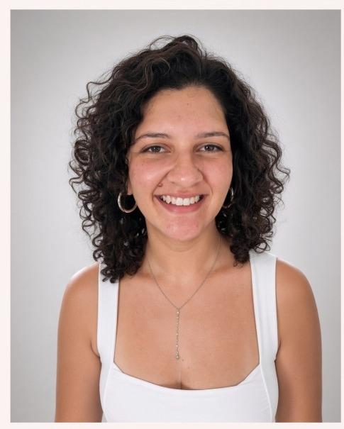
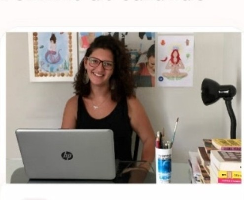
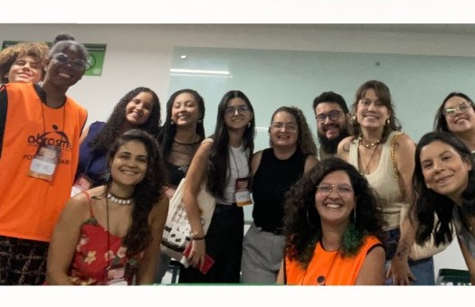
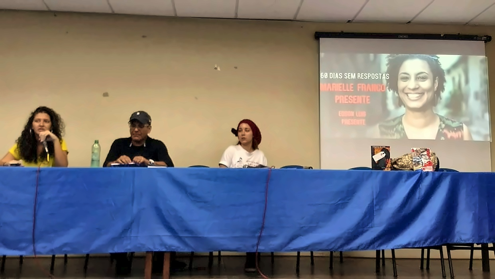
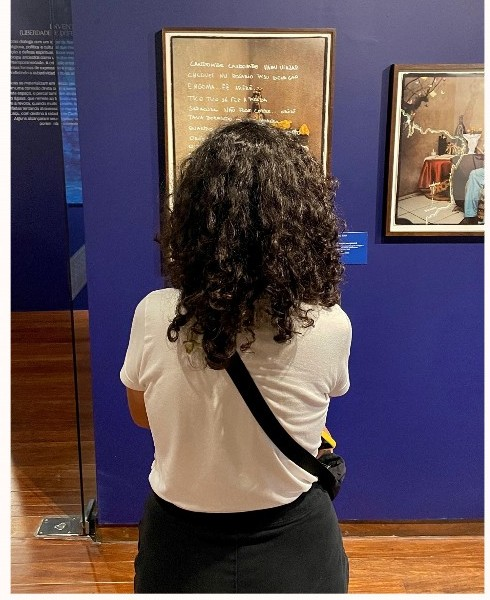

01 / CLÍNICA
Psicoterapia
Um espaço de escuta e reflexão sobre experiências, relações, sentimentos e questões que atravessam a vida.
Conversar sobre psicoterapia ↗ESCUTA · VÍNCULO · POSSIBILIDADES
Um espaço de escuta e cuidado para acolher experiências, construir sentidos e encontrar possibilidades diante dos desafios da vida. Há psicoterapia, acompanhamento terapêutico em diferentes contextos e ações de saúde mental para equipes.
Isabella Pessanha Bittar de Carvalho · Psicóloga Clínica · CRP 05/58202

CUIDADO QUE SE CONSTRÓI NO ENCONTRO01 QUEM SOU
Sou Isabella Pessanha Bittar de Carvalho, psicóloga formada pela Universidade Federal Fluminense (UFF). Minha trajetória reúne experiências em clínica, saúde mental, acompanhamento terapêutico e trabalho em equipe e em território.
Meu trabalho parte da escuta cuidadosa e do respeito às diferentes formas de viver. Cada processo é construído em diálogo, considerando a história, o contexto e as necessidades de cada pessoa.
Os atendimentos e as propostas de trabalho são conversados individualmente para compreender a demanda e verificar a adequação do serviço.
UM PRESENTE PARA SEU CAMINHO
Um caderno gratuito com reflexões e exercícios gentis para reconhecer necessidades, fazer escolhas possíveis e cultivar bem-estar no cotidiano — sem fórmulas prontas.
Quero receber o e-book ↗02 COMO POSSO ACOMPANHAR VOCÊ
Serviços construídos a partir da escuta, do contexto e dos objetivos de cada processo.
01 / CLÍNICA
Um espaço de escuta e reflexão sobre experiências, relações, sentimentos e questões que atravessam a vida.
Conversar sobre psicoterapia ↗02 / TERRITÓRIO
A possibilidade de construir o acompanhamento também fora do consultório: em parques urbanos, caminhadas pela cidade, passeios de bicicleta, praias ou trilhas em áreas de montanha, quando esses contextos fizerem sentido.
Cada proposta é conversada e planejada em conjunto, considerando objetivos, consentimento, acessibilidade, condições físicas, clima, privacidade e segurança. Atividades esportivas não são obrigatórias nem substituem orientação de profissionais do esporte; locais e formato dependem de avaliação e combinação prévia.
Conversar sobre acompanhamento ↗
03 / FLEXIBILIDADE
Possibilidade de combinar encontros on-line e presenciais, conforme os objetivos, a disponibilidade e a adequação de cada processo.
Modalidade e condições são conversadas previamente; o formato presencial depende de avaliação e combinação.
Conversar sobre atendimento híbrido ↗03 PESQUISA E PARTICIPAÇÃO EM EVENTOS


ABRASME · 4º FÓRUM BRASILEIRO DE DIREITOS HUMANOS E SAÚDE MENTAL · 2019
Registro público lista Isabella Pessanha Bittar de Carvalho entre as pessoas coordenadoras.
Consultar registro público ↗ABRASME · 4º FÓRUM BRASILEIRO DE DIREITOS HUMANOS E SAÚDE MENTAL · 2019
Registro público lista Isabella Pessanha Bittar de Carvalho entre as pessoas coordenadoras.
Consultar registro público ↗ABRASME · 9º CONGRESSO BRASILEIRO DE SAÚDE MENTAL · 2024
Resumo público apresenta Isabella como participante e discute clínica nômade e acompanhamento terapêutico.
Consultar registro do congresso ↗ABRAPSO · 23º ENCONTRO NACIONAL · 2025
Trabalho listado publicamente com Isabella Pessanha Bittar de Carvalho entre as autoras.
Consultar registro do encontro ↗
04 UM JEITO DE TRABALHAR
Ações de saúde mental para organizações, com atenção às relações, aos contextos de trabalho e às experiências das equipes.
Singularidade
Respeito à história e ao contexto de cada pessoa.
Construção compartilhada
Objetivos e caminhos conversados ao longo do processo.
Contexto e cotidiano
Atenção às relações, aos territórios e às condições de vida.
05 CONTEÚDOS E CONTATO
Este site apresenta informações públicas, serviços e conteúdos educativos. Não é prontuário, canal de emergência nem portal de acompanhamento clínico.
06 PRIVACIDADE E CONTATO
Este site não coleta nem armazena dados de atendimento, histórico clínico ou objetivos pessoais em formulários locais. Para perguntar sobre serviços, use o contato direto e não envie informações íntimas por mensagens.
Falar sobre os atendimentos ↗UM PRIMEIRO ENCONTRO
Entre em contato para tirar dúvidas sobre atendimentos ou solicitar uma proposta para sua empresa.
Isabella Pessanha Bittar de Carvalho
Psicóloga Clínica · CRP 05/58202
Este canal é destinado a informações e agendamentos. Evite enviar dados íntimos ou informações sensíveis por mensagens. Em situações de emergência, procure um serviço de urgência da sua região.